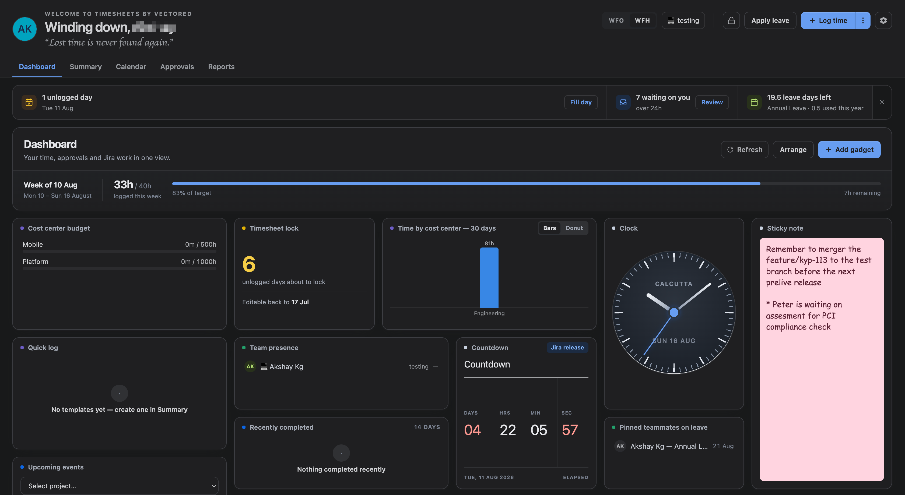
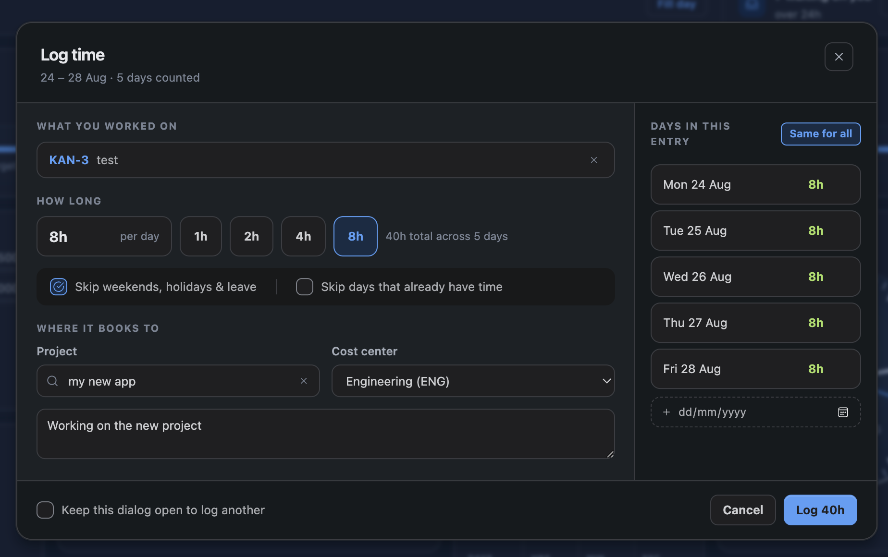

TimeSheets adds time tracking, approvals, leave and billing to Jira Cloud. It runs entirely on Atlassian Forge, so there is nothing to host and no data leaves your Atlassian site except email.
This page takes you from a fresh install to a first logged entry. It should take about ten minutes.
1. Install the app
Install TimeSheets from the Atlassian Marketplace. On first load the app creates its own tables, which takes a few seconds; if a screen looks empty immediately after installing, reload it once.
You need to be a Jira site administrator to install and to reach the admin screens. Everyone else can start logging time straight away.

2. Open the Hub
Everything a person needs day to day lives in one place, called the Hub. Find it under Apps → TimeSheets in the Jira top navigation.
The Hub has these tabs:
| Tab | What it is for | Shown to |
|---|---|---|
| Dashboard | A configurable grid of gadgets — your week, pending approvals, leave balance and so on | Everyone |
| Summary | Month totals, missing working days, and what your team is up to | Everyone |
| Calendar | Month and week views of what you logged, plus leave and holidays | Everyone |
| Approvals | Anything waiting on your decision, with the pending count in the tab label | Approvers only |
| Reports | Team matrices, breakdowns and exports | Approvers and project admins |
Which emails you receive, and the mute and snooze controls, are in your personal settings rather than a tab of their own.

3. Log your first entry
- Open the Hub — and stay on the Dashboard, or go to the Calendar.
- Click Log time — or double-click a day in the Calendar to start on that date.
- Pick a project and a cost centre — the cost centre is how the work is classified for reporting and billing.
- Enter the time — in hours or minutes. Entries go in 5-minute increments.
- Optionally link a Jira issue — type a key or search by summary.
- Save — the entry appears immediately on your Calendar and Dashboard.

If the project you want is not in the list, it either has no cost centres assigned to it yet, or you cannot browse it in Jira. Both are fixed by an administrator — see Project Settings.
4. What an administrator should set up next
TimeSheets works out of the box, but four things are worth deciding early because they shape everything else:
- Cost centres. How work is classified. Nothing can be logged until at least one is assigned to a project — see Cost Centers.
- Approvals. Whether time needs approving at all, per entry or per week, and who approves it — see Approvals.
- Working hours and days. The basis for capacity, missing-day detection and leave — see Admin Settings.
- Leave types. Which categories your organisation uses. Health-related types arrive switched off on purpose — see Leave Management.
Billing is entirely optional and off until you add a client and a rate. If you only want timesheets, you can ignore it.
5. Where to go next
- Logging in bulk, copying weeks and using templates — Logging Time
- Getting time approved — Approvals
- Booking and approving leave — Leave Management
- Turning approved hours into invoices — Invoices
- What is stored and who can see it — Privacy & Data Handling